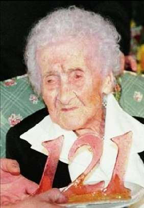

Борис Акунин
Мой календарь
Недавно мы отмечали самый продолжительный брак. Сегодня идем дальше: празднуем долгую-предолгую жизнь.
В Библии и в исторических хрониках фигурирует множество долгожителей, проживших на свете феноменально долго. Праотец Мафусаил, например, провел на сем свете 969 лет, но это, допустим сказки, а вот про китайского целителя-травника Ли Цинъюня, умершего в 1933 году, всерьез писали, что он родился аж в XVII веке.
Но для солидного издания «Книга рекордов Гиннеса» недокументированные сведения считаются недостоверными.
Стопроцентно подтвержденный рекорд долгожительства принадлежит француженке Жанне Луизе Кальман (1875–1997), чей день рождения как раз сегодня.
Жанна родилась, когда еще был жив Ганс-Кристиан Андерсен, а завершила свою земную одиссею в век интернета.
До самого конца мадам Кальман пребывала в здравом уме и ясной памяти. До ста лет каталась на велике. Объясняла свою долговечность тем, что ест много шоколада, каждый день пьет красное вино и никогда не переживает из-за того, что нельзя поправить. (Эти три пункта просто запишите себе).
Когда Жанне было девяносто лет, один адвокат средних лет уговорил ветхую старушку заключить сделку: она отпишет ему квартиру, а он за это будет ежемесячно выплачивать ей сумму, достаточную для безбедного существования. Мадам Кальман беднягу пережила, а квартира, доставшаяся его наследникам, получилась просто золотая.
В известном тосте говорится: «Ну, до ста двадцати!».
Сегодня нужно выпить красного вина, закусить шоколадкой и сказать: «А можно и дольше».